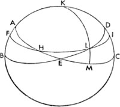
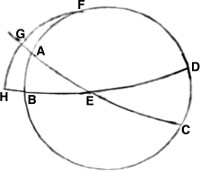

8. Gündüzle Gecenin Saatleri ve Bölümleri Üzerine
O halde Güneş'in yükselimine denk düşen günlerin farkını tablodan çıkarmak istediğimizde, aradığımızı kutbun verilen yüksekliği ile buluruz ve değeri kuzey yükselimi için dairenin çeyreğine ekler, güney yükselimi içinse ondan çıkarırız; sonra sonucu ikiyle çarparız, böylece hem günün uzunluğunu hem de dairenin geri kalan kısmı olan gecenin uzunluğunu elde ederiz. Bu dilimlerden herhangi birinin on beş zamana bölünmesi, o günde kaç eşit saat olduğunu gösterecektir. Ancak dilimin on ikinci bölümünün alınmasıyla bir mevsimsel saatin süresini buluruz. Bu durumda her daim on iki parçadan oluşan saatler, isimlerini günlerinden alır. Böylelikle saatlerin eskiler tarafından niçin yaz gündönümü, ekinoks ve kış gündönümü şeklinde adlandırıldığı da anlaşılmış olur. İlk zamanlarda gün doğumundan gün batımına geçen süre için on iki saatten başka bir sistem kullanılmıyordu ve bu on iki saat geceyi dört nöbete veya vardiyaya ayırıyordu. Saatlerin bu şekilde kullanımı uzunca bir süre insanlığın sözsüz kabulüyle devam etti. Daha sonra su saatleri bulundu; bu sistem damlayan suyun eklenmesi ve çıkarılması esasına dayanıyordu; insanlar bu sistemle bir buhar taneciğinin zamanla ilgili karmaşa yaratmaması adına saatlerini günlerin farklı uzunluklarına göre ayarlıyordu. Fakat daha sonra gündüz ve geceye eşit saatler verilmesi genel kullanıma geçince; zamanın söylenmesinin daha kolay bir hale getirilmesi adına mevsimsel saatlerden vazgeçildi; zira sıradan birine saatin, günün birincisi mi, üçüncüsü mü, altıncısı mı, dokuzuncusu mu yoksa on birincisi mi olduğunu sorduğunuzda, karşınızdaki kesin bir cevap veremiyor, meseleyle ilgili bir şey söyleyemiyordu. Günümüzdeyse kimileri eşit saatlerini öğle vaktinden, kimileri Güneş'in batışından, kimileri gece yarısından, kimileri de devlet tarafından yapılan uygulamaya uygun olarak Güneş'in doğuşundan çıkarıyor.
9. Ekliptiğin Kesitlerindeki Eğik Yükselme ve Göklerin Ortasındaki Derecenin Artan Dereceye Göre Bulunuşu Üzerine

Gündüzlerle gecelerin uzunlukları ve aralarındaki farklar açıklandığına göre artık eğik yükselmelere dair yapacağımız değerlendirmeye, yani ekvator zamanlarıyla ekliptiğin on iki bölümüne veyahut onun ufku kesen yaylarına geçelim. Öne sürdüğümüz gibi, düz ve eğik yükselmeler arasındaki farklarla, ekinoksla başka bir gün arasındaki farklar benzerdir. Ayrıca eskiler, ilkbahar ekinoksunun başından itibaren on iki sabit takımyıldıza hayvanlardan isimler seçmişler: Koç, Boğa, İkizler, Yengeç ve sırayla diğerleri. O halde daha da anlaşılır kılmak adına, ABCD yine bir meridyen dairesi olsun ve AEC ekvatoral yarım çemberiyle BED ufku, E noktasında kesişsin. Buna uygun olarak H noktası, ekinoks olarak alınsın. FHI ekliptiği bu noktadan geçerek L noktasında ufku kessin; bu kesişim boyunca büyük dairenin çeyreği KLM, ekvatorun kutbu olan K'den insin. Bu durumda apaçıktır ki, ekliptiğin HL yayı ve ekvatorun HE yayı ufukta kesişir; fakat dik küredeki HL yayı HEM yayıyla birlikte yükselir. EM yayı bu yükselmeler arasındaki farkı oluşturduğundan, gösterdiğimiz gibi, bu aynı zamanda ekinoksla başka bir gün arasındaki farkın yarısıdır. Ancak bir kuzey yükseliminde dairenin çeyreğine eklenen değer, burada açılımdan çıkarılır; fakat bir güney yükseliminde bu, açılıma eklenir; böylelikle yükselme eğik hale gelir. O halde bir burcun ya da ekliptiğin başka bir yayının belirlenmesiyle, başından sonuna sayılan açılımlar sayesinde uzunluk da ortaya çıkar. Buradan hareketle ekliptiğin derecesi verildiğinde, onun ekinokstan yükselişi hesaplanarak göklerin ortasında bulunan derece de bulunur.
Buna göre L noktasında yükselen bir derecenin yükselimi, ekinokstan HL yayına olan uzaklığa karşılık gelecek şekilde verildiğinde; HEM yayı açılım, AHEM'nin bütünü de yarım günün yayı olur. Daha sonra geri kalan AH de bulunur. AH, tablo sayesinde ya da yine AH kenarıyla birlikte kesitin AHF açısının bulunmasıyla öğrenilen FH yayının açılımıdır ve FAH açısı diktir. Buna göre göğün ortasındaki dereceyle yükselen derece arasındaki bütün FHL yayı da bulunur. Buna karşılık evvela göğün ortasındaki derece, yani FH yayı bulunursa; yükselen burcu da öğreniriz. AF yayı yükselimi de öğrenilir; kürenin eğikliğinin açısı sayesinde geri kalan AFB ve FB yayları da bulunur. BFL üçgeninde BFL açısı ve FB kenarı yukarıdakiler sayesinde bulunurken, FBL açısı da dik olur. Buna göre aranan FHL kenarı da bulunmuş olur, ya da problem aşağıda gösterildiği gibi farklı bir yöntemle çözülür.
10. Ufukla Ekliptik Kesitinin Açısına Dair

Dahası, ekliptik kürenin eksenine eğik olduğu için; ufukla farklı açılar yapar. Gölgelerin farklılıklarına dair söylediğimiz gibi, ekliptikteki karşıt dereceler, dönenceler arasında yaşayanlar için ufkun ekseninden geçer. Fakat bizlerin, yani heteroscii'nin şahit olduğu açıları gösterirsek bunun amacımız için yeterli olacağı kanaatindeyim. Bu açılar sayesinde daha genel oranlar kolayca anlaşılabilir. Buna göre eğik kürede ekinoksun ya da Koç'un yükselişinin başlangıcındayken bu durumun gayet açık olduğunu düşünüyorum; bu vakitte göğün ortasında bulunan Oğlak'ın başlangıcından ölçülen güney yönündeki en büyük yükselim ne kadar artarsa; ekliptik ufkun üzerinde o kadar büyük bir eğime sahip olur. Buna karşın ekliptik, ufkun üzerinde daha büyük bir eğime sahip olduğunda; bu daha büyük bir doğu açısı yaratır. Terazi'nin başlangıcı ortaya çıktığında ve Yengeç'in başlangıcı göğün ortasında belirdiğinde bu üç çember, yani ekvator, ekliptik ve ufuk, meridyen dairesinin kutuplarındaki ortak kesitte bir araya gelir; bunların meridyen dairesinin yaylarında kesişmesi, yükselme açısının ne kadar büyük olduğunun ölçülmesi gerektiğini gösterir. Fakat ekliptiğin diğer parçalarının ölçüm yönteminin iyi anlaşılabilmesi için yine ABCD, meridyen dairesi; BED, ufkun yarım çemberi; AEC, ekliptiğin yarım çemberi olsun ve E noktasında yükselen ekliptiğe herhangi bir derece verilsin.
Problemimiz, dört dik açı 360ºye eşitken, AEB açısının ne kadar büyük olduğunu bulmaktır. Buna göre E, yükselen derece olarak bulunduğundan; göğün ortasına denk gelen önceki derece sayesinde AE yayı da bulunur. ABE açısı 90º olduğundan, AE'nin iki katını ayıran kirişin AB'nin iki katını ayıran kirişe oranı, kürenin çapının AEB'nin iki katını ayıran kirişe oranına eşittir. Bu durumda AEB açısı da bulunmuş olur. Fakat bulunan açı değil de göğün ortasındaki açı artıyorsa, buna A diyelim, AEB açısı da doğudaki ya da artan açının ölçüsü olacaktır. Kutup olarak alınan E ile birlikte büyük dairenin FGH çeyreği çizilsin ve EAG ile EBH çeyrekleri de tamamlansın. Buna göre meridyen yüksekliği olan AB bulunduğundan AF, AB'nin 90ºden farkına eşittir; buradan hareketle FAG açısı bulunur; FGA açısı da 90ºdir, yani FG yayı da bulunmuş olur: O halde aradığımız artış açısını ölçecek şekilde, FG'nin 90ºden farkı GH'ye eşittir. Benzer şekilde burada göğün ortasındaki derecenin ne kadar olduğunu bulmada yükselen derecenin bulunmuş olmasının yararı ortadadır; zira küresel üçgenlerde olduğu gibi GH'nin iki katını ayıran kirişin AB'nin iki katına oranı, kürenin çapının AE'nin iki katını ayıran kirişe oranına eşittir. Bunlarla ilgili olarak üç tablo dizisi daha ekliyoruz. İlki ekliptiğin altıncı bölümü boyunca yükselen ve Koç'la başlayan, dik küredeki yükselmeler tablosu olacak. İkincisi ekliptikte 39ºlik kutupsal yükselmenin bulunduğu paralelden, 57ºlik kutupsal yükselmenin olduğu paralele doğru her defasında 3ºlik artış gösteren bir seyirle 6º boyunca süren eğik küredeki yükselmeler tablosu olacak. Diğer tablo ise aynı yedi dilimin altında 6ºlik adımlarla ekliptik boyunca ilerleyen ve ufukla oluşmuş açıları içerecek. Bu tablolar ekliptiğin en küçük eğikliğine, yani neredeyse bizim zamanımıza tekabül eden 23º28'ya uygun olacak.